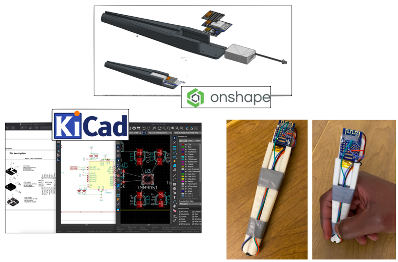
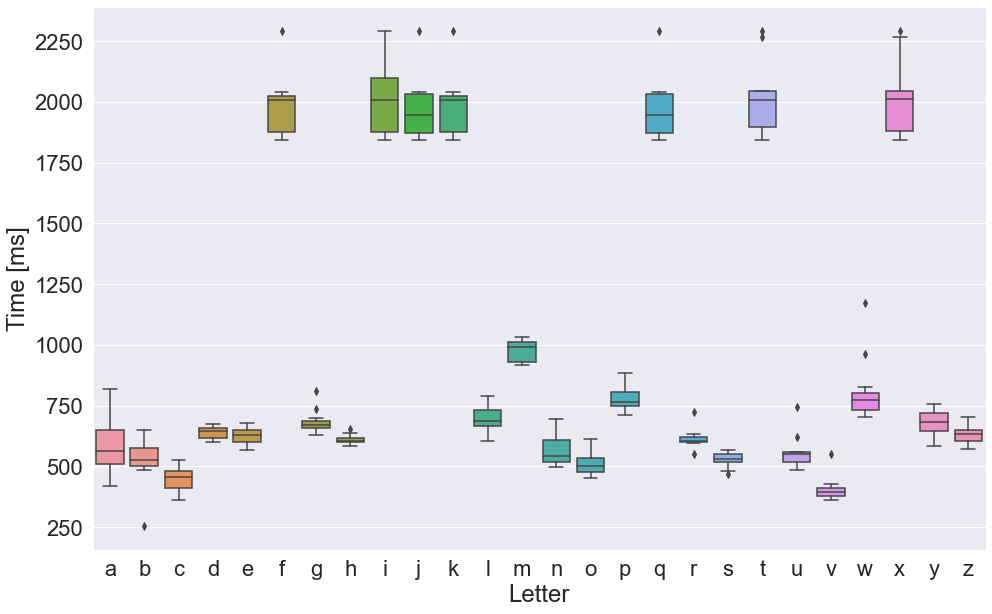
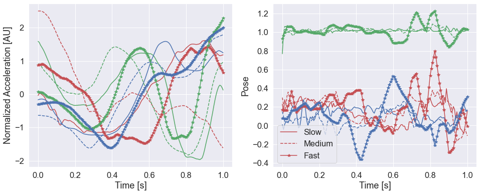

IMU Pen
(WORK IN PROGRESS)
Hardware
I developed a prototype IMU pen. This was a submodule - it was part of the sonic screwdriver project. The objective was to create an electronic pend that could be used on any surface, and the writing translated into alphabets through an online socket.
The prototype below was made to collect data.

The core electronics of the prototype are the same as for the sonic screwdriver. For collecting data, I used electronic modules from TinyCircuits.
Data
The pen collects motion data from the 9-axis module (accelerometer, gyroscope, magnetometer), and uploads them. The data can then be downloaded and used to train a machine learning model to determine the letter being written from the motion data. The motion data for the letter "a" is shown:
Rather than collect 1000s of examples, I opted to first use a combination of unsupervised learning methods, and a priori knowledge on letters for classify motion into alphabets. For aprior knowledge, I first analyzed the use of dashes and dots, and investigated the length (of time) used in writting different letters.

I investiagted how the rate of writing affected the quality of motion data. There was ample repeatability when written at different rates. This means there is less of a concern about how quickly letters are written, since the motion would still remain representative of the letter once normalized.

Unsupervised Learning
t-stochastic neigheborhood embeddings (tSNE) was used to learn latent structures in the data space of all recorded motion. Three letters that are similar (a, d, and g) are shown below. In the plots, show that they are similar (grouped nearby), but distinct enough that they are clustered seperately.
The remaining letters (excluding letters involving dots and dashes) are shown below. The distinctive clustering shows that there are latent structures in our data. Thus, a trained DNN model will be able to extract the correct letter from the motion data.